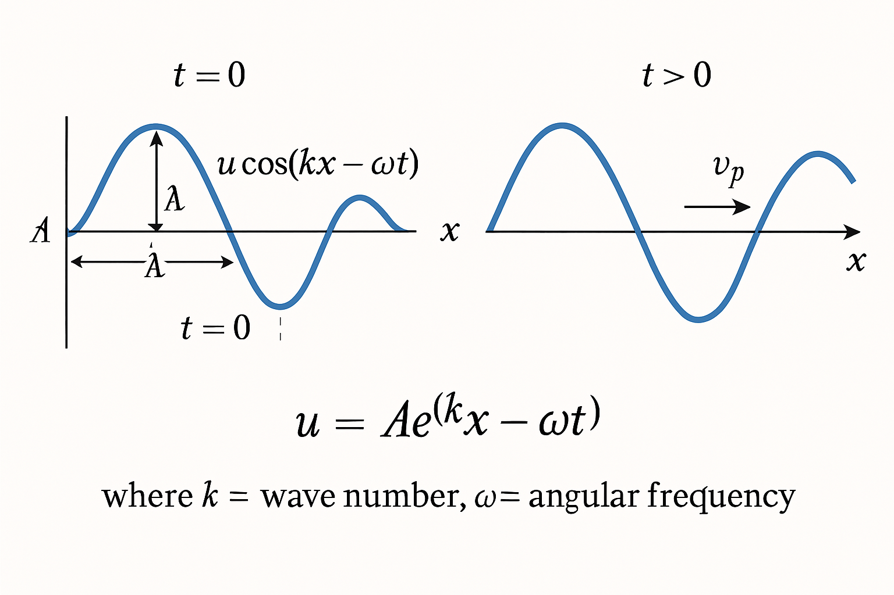
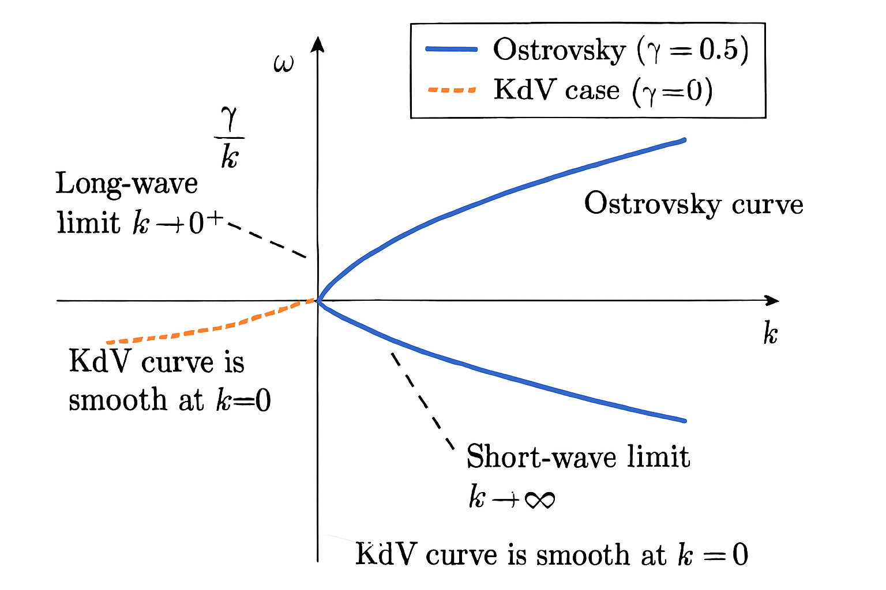
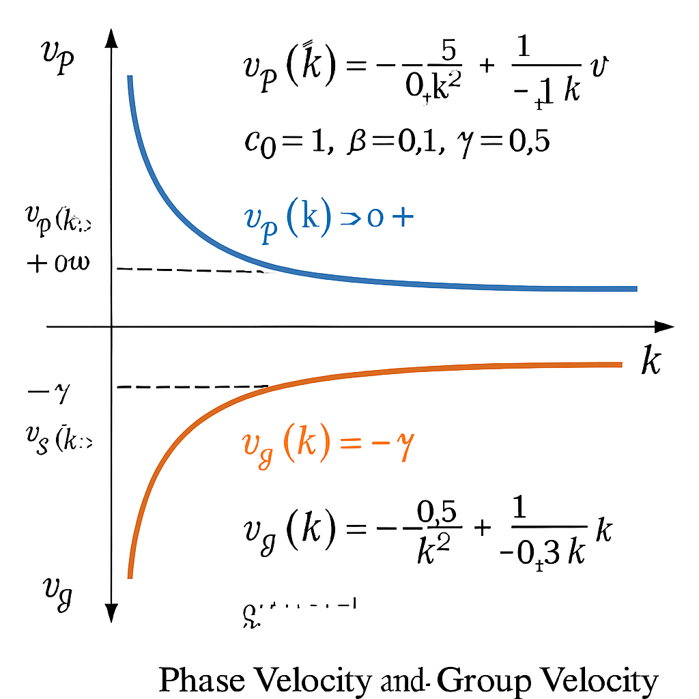
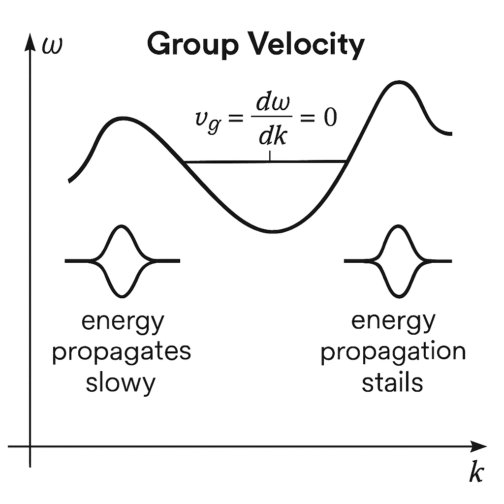

第3章：Ostrovsky 方程的线性色散分析
在了解了 Ostrovsky 方程的背景和数学形式之后，本章将深入探讨其核心特性之一：线性色散关系。线性色散分析是理解波动方程行为的第一步，它揭示了不同波长的单色波是如何传播的，并为后续的非线性分析奠定基础。
3.1 线性化方法
Ostrovsky 方程 (ut + c0 ux + α u ux + β uxxx)x = γ u 是一个非线性偏微分方程，其非线性项 α u ux 使得方程的求解变得复杂。为了简化分析，我们常常首先研究其线性化版本的行为。
3.1.1 为什么要进行线性化？
线性化是一种在数学和物理中广泛应用的近似方法。对于非线性方程，线性化通常围绕一个已知的简单解（例如，零解 u=0，表示未受扰动的状态）进行，假设扰动非常小，从而可以忽略非线性项。
进行线性化的主要原因包括：
- 简化分析：线性方程比非线性方程更容易求解。许多强大的数学工具（如傅里叶变换）可以直接应用于线性方程。
- 揭示基本波动特性：线性分析可以揭示系统固有的波动模式和色散特性。即使在非线性效应变得重要之前，这些线性特性也往往主导着波的初始演化。
- 稳定性分析：线性化可以用来分析已知解（如平衡态）的稳定性。如果小扰动在线性化方程下增长，则原解可能是不稳定的。
- 作为非线性分析的起点：线性解可以作为更高级的非线性分析方法（如微扰法）的出发点。
对于 Ostrovsky 方程，线性化将帮助我们理解在没有强非线性相互作用的情况下，不同波长的波是如何因色散和旋转效应而传播的。
3.1.2 线性化 Ostrovsky 方程的推导过程
我们考虑 Ostrovsky 方程：
为了线性化这个方程，我们假设波的振幅 u 非常小，因此包含 u 的二次或更高次方的项（这里是 α u ux）可以被忽略。这个项是 O(u²) 阶的，而其他项是 O(u) 阶的。
忽略非线性项 α u ux，方程变为：
展开左边的导数：
这就是线性化的 Ostrovsky 方程。它是一个线性偏微分方程，描述了小振幅波在旋转和色散介质中的传播。
3.2 求解线性化方程与色散关系
为了从线性化的 Ostrovsky 方程中得到色散关系，我们通常寻找平面波解。
3.2.1 假设行波解（平面波解）
我们假设线性化方程存在形如 u(x, t) = A ei(kx - ωt) 的平面波解，其中：
A是波的复振幅（常数）。k是波数，表示单位长度内的波的周期数 (k = 2π/λ，λ 是波长)。ω是角频率，表示单位时间内的相位变化率 (ω = 2π/P，P 是周期)。i是虚数单位 (i² = -1)。
将这个解代入线性化方程 utx + c0 uxx + β uxxxx = γ u，我们需要计算 u 的各项偏导数：
ut = -iω A ei(kx - ωt) = -iω uux = ik A ei(kx - ωt) = ik uuxx = (ik)² u = -k² uutx = ∂/∂t (ik u) = ik ut = ik (-iω u) = kω uuxxx = (ik)³ u = -ik³ uuxxxx = (ik)⁴ u = k⁴ u
将这些导数代入线性化方程：
由于我们寻找非零解 (u ≠ 0，即 A ≠ 0)，我们可以将方程两边同时除以 u：
3.2.2 推导色散关系表达式
从上式 kω - c0 k² + β k⁴ = γ，我们可以解出角频率 ω 作为波数 k 的函数，即 ω = ω(k)。这就是我们所寻求的色散关系。
如果 k ≠ 0，则：
这就是 Ostrovsky 方程的线性色散关系。它明确地给出了波的频率 ω 如何依赖于其波数 k，以及方程中的参数 c0（线性相速度基准），β（短波色散系数）和 γ（旋转效应系数）。
注意：
- 如果
k = 0（对应无限长波），则原方程kω - c0 k² + β k⁴ = γ变为0 = γ。这意味着如果γ ≠ 0，则k=0不是一个允许的波模式，除非ω奇异。如果γ = 0（无旋转，退化为KdV情况的线性化版本），则k=0对应ω=0，是平凡解。色散关系中的γ/k项表明，在k → 0时，旋转效应变得非常重要，可能导致频率发散，这暗示了非常长波的行为可能与KdV方程有显著不同。 - 这个色散关系是针对在
u=0背景态上的小扰动而言的。
3.2.3 插图规划：行波解概念图

插图6: 行波解概念图。左侧：一个正弦波 u(x,t) = A cos(kx - ωt) 在某一时刻 t=0 的图像，标注波长 λ 和振幅 A。右侧：同一个波在稍后时刻 t > 0 的图像，显示波形向右传播（如果 ω/k > 0），标注相速度 v_p。下方：公式 u = A ei(kx - ωt) 并简要说明 k 和 ω 的含义。
3.3 色散关系的分析 (基础部分)
得到色散关系 ω(k) = γ/k + c0 k - β k³ 后，我们可以分析其特性。
3.3.1 色散关系图的绘制与解读
色散关系图通常是绘制 ω 作为 k 的函数的曲线。对于 Ostrovsky 方程，这个曲线的形状将取决于参数 c0, β, 和 γ 的符号与大小。
假设 c0 > 0, β > 0, γ > 0（这是物理上常见的参数选择，例如 β 对应KdV类型的正色散，γ 对应标准旋转效应）。
γ/k项：当k → 0⁺(长波极限) 时，这一项趋于+∞。当k → +∞(短波极限) 时，这一项趋于0。这是一个双曲线型的贡献。c0 k项：这是一个线性项，表示基础的平流效应。若只有此项，则ω = c0 k，为非色散波。-β k³项：这是一个三次项，表示KdV类型的色散。对于β > 0，这一项是负的，并且随着k的增加，其绝对值迅速增大，使得ω减小。
典型色散曲线的特征 (假设 c0, β, γ > 0)：
- 长波行为 (
k → 0⁺)：ω(k) ≈ γ/k。频率非常高，这与KdV方程的ω(k) ≈ c0 k - β k³(在k → 0时ω → 0) 显著不同。这个γ/k的行为是旋转效应的直接体现。 - 短波行为 (
k → +∞)：ω(k) ≈ -β k³。频率趋于-∞，这表明对于非常短的波，KdV类型的色散占主导，并且波可能向负方向高速传播（如果ω为负且大）。 - 可能存在的极值：由于
γ/k项在k较小时使ω增大，而-β k³项在k较大时使ω减小，ω(k)曲线可能存在一个最大值（对于k>0）。这意味着在某个波数范围内，群速度可能为零或改变符号。
解读：
- 色散关系图的斜率
dω/dk是群速度。 - 从原点到曲线上一点
(k, ω)的连线的斜率ω/k是相速度。 - 如果
ω(k)不是k的线性函数，则波是色散的。
3.3.2 相速度与群速度的定义与计算
- 相速度 (Phase Velocity)
vp(k)：vp(k) = ω(k)/k = (γ/k + c0 k - β k³)/k = γ/k² + c0 - β k²相速度描述了具有特定波数k的单个波分量的等相位点（如波峰）的传播速度。对于 Ostrovsky 方程，相速度明显依赖于k，因此波是色散的。- 当
k → 0⁺，vp(k) ≈ γ/k² → +∞。 - 当
k → +∞，vp(k) ≈ -β k² → -∞。
- 当
- 群速度 (Group Velocity)
vg(k)：vg(k) = dω(k)/dk = d/dk (γ/k + c0 k - β k³)vg(k) = -γ/k² + c0 - 3β k²群速度描述了由一组波数相近的波组成的波包的整体（或能量）传播速度。- 当
k → 0⁺，vg(k) ≈ -γ/k² → -∞。 - 当
k → +∞，vg(k) ≈ -3β k² → -∞。
- 当
重要观察：
- 相速度和群速度通常不相等，且都依赖于
k，这再次证实了 Ostrovsky 波是强色散的。 - 特别地，在长波极限 (
k → 0⁺)，相速度和群速度都发散，且符号相反（vp → +∞,vg → -∞，假设γ > 0）。这是 Ostrovsky 方程色散特性的一个非常显著的特点，与KdV方程（其中vp(0) = vg(0) = c0）截然不同。这种行为与所谓的“罗斯比波”（Rossby waves）的某些特性相似，罗斯比波是地球物理流体中由于科里奥利力梯度（β效应，不同于这里的系数β）产生的行星尺度波，其相速和群速也可能反向。
3.3.3 不同参数对色散性质的影响 (例如，旋转参数 γ)
- 旋转参数
γ：- 如果
γ = 0（无旋转），色散关系退化为ω(k) = c0 k - β k³，这是KdV方程的线性色散关系（在移动参考系x' = x - c0 t中，常写作ω'(k) = -β k³或ω'(k) = β k³取决于β的定义和坐标系）。此时，vp(k) = c0 - β k²，vg(k) = c0 - 3β k²。在k=0时，vp(0) = vg(0) = c0。 - 当
γ > 0时，如上所述，它在长波区域引入了强烈的色散效应，导致ω/k和dω/dk在k → 0时发散。γ值越大，这种长波色散效应越强。 - 如果
γ < 0，则γ/k项在k > 0时为负。ω(k → 0⁺) → -∞。
- 如果
- KdV色散系数
β：β控制短波色散的强度。β越大，-β k³项（或-β k²在相/群速度中）的影响越大，使得短波的色散效应更显著。β的符号决定了KdV型色散是“正色散”还是“负色散”。例如，在水波中，KdV方程的β通常为正，导致短波相速度低于长波相速度（不考虑旋转时）。
- 线性相速度基准
c0：c0仅仅是对整个色散曲线在ω方向上的一个线性倾斜，或者说是在相速度和群速度表达式中的一个常数偏移。它不改变色散的定性行为（即ω(k)是否为k的非线性函数），但会影响所有波分量的基础传播速度。
3.3.4 插图规划：典型的 Ostrovsky 方程色散关系图

插图7: 典型的 Ostrovsky 方程色散关系图。绘制 ω(k) vs k 的曲线，选取典型的正参数 c₀, β, γ，清晰标出长短波行为及可能的极值。可对比 γ=0 的情况。
3.3.5 插图规划：相速度与群速度示意图

插图8: 相速度与群速度示意图。基于与插图7相同的参数，分别绘制 v_p(k) vs k 和 v_g(k) vs k 的曲线，清晰展示其在长短波极限的行为。
3.4 色散关系的分析 (进阶内容)
3.4.1 长波近似与短波近似
- 长波近似 (
k → 0)：
如前所述，ω(k) ≈ γ/k + c0 k。
此时，相速度vp(k) ≈ γ/k² + c0，群速度vg(k) ≈ -γ/k² + c0。
在这个近似下，KdV类型的色散项-β k³被忽略了。这表明对于非常长的波，旋转效应γ/k是主导的色散机制。 - 短波近似 (
k → ∞)：
此时，ω(k) ≈ -β k³(假设c0 k和γ/k相比β k³可以忽略)。
相速度vp(k) ≈ -β k²，群速度vg(k) ≈ -3β k²。
这与KdV方程在短波极限下的行为类似（忽略c0）。表明对于非常短的波，KdV类型的色散占主导，而旋转效应γ/k的影响可以忽略。 - 中间波数范围：
在某个中间的波数范围，γ/k,c0 k, 和-β k³三项可能同等重要，导致更复杂的色散行为，例如ω(k)曲线可能出现极值点（dω/dk = 0的点）。
令vg(k) = -γ/k² + c0 - 3β k² = 0，可以解出群速度为零的波数k0。
-γ + c0 k0² - 3β k0⁴ = 0这是一个关于k0²的二次方程：3β (k0²)² - c0 (k0²) + γ = 0。
解得k0² = [c0 ± sqrt(c0² - 12βγ)] / (6β)。
为了使k0²有正实数解，需要判别式Δ = c0² - 12βγ ≥ 0，并且分子也为正。
如果存在这样的k0，则在k=k0处波包的传播速度为零（在实验室参考系中，如果c0代表了某种平均流速，则是在此参考系下）。这可能导致能量的局域积累。
3.4.2 色散效应与非线性效应的初步讨论
虽然本章主要关注线性色散，但理解它与非线性效应的相互作用是至关重要的。
- 非线性效应 (
α u ux)：倾向于使波形变陡。大振幅部分传播快于小振幅部分，可能导致波前变陡峭，最终形成激波（如果没有任何机制来抗衡它）。 - 色散效应 (
ω(k)不是k的线性函数)：倾向于使不同频率（波数）的波分量以不同速度传播，导致波包弥散或变形。
平衡：在许多非线性波动方程（如KdV）中，非线性陡峭效应和（短波）色散弥散效应可以达到一种平衡，从而形成稳定的行波解，如孤立子。孤立子在传播过程中保持其形状和速度不变。
Ostrovsky 方程的特殊性：
- Ostrovsky 方程同时包含KdV型短波色散 (
-β k³项) 和旋转引起的非常长波色散 (γ/k项)。 - 旋转引起的
γ/k项色散非常强烈，尤其是在长波区域。这种强烈的长波色散往往会阻止KdV型孤立子的形成，因为它倾向于将能量辐射到长波中。 - 因此，Ostrovsky 方程的行波解（如果存在）通常不是指数衰减的KdV孤子，而可能是代数衰减的孤子、周期波，或者根本不存在稳定的局域化行波解，而是表现为辐射阻尼的准孤子。
- 线性色散关系中
ω(k → 0) → ∞的特性暗示了能量向长波的有效转移。
对非线性效应的更深入分析超出了本章线性分析的范围，但线性色散关系为理解这些复杂行为提供了基础。
3.4.3 特殊情况下的色散特性 (例如，无旋转情况退化为 KdV)
- 无旋转 (
γ = 0)：ω(k) = c0 k - β k³vp(k) = c0 - β k²vg(k) = c0 - 3β k²这是标准的KdV色散关系（在实验室参考系）。如果β > 0，则短波（大k）的相速度和群速度都小于长波（小k）的速度（相对于c0）。这种色散允许KdV孤子的存在。 - 无KdV型色散 (
β = 0)：ω(k) = γ/k + c0 kvp(k) = γ/k² + c0vg(k) = -γ/k² + c0这种情况下，色散完全由旋转项γ/k主导。这种方程有时被称为“旋转KdV方程”的简化形式或“Ostrovsky-Hunter方程”的线性部分。它仍然是强色散的，尤其是在长波区域。 - 无平流 (
c0 = 0)：ω(k) = γ/k - β k³这只是将整个色散曲线在ω方向上下平移，不改变色散的定性特征，但会改变所有波的传播方向和速度。
3.4.4 插图规划：长波/短波近似下的波形示意图

插图9: 长波/短波近似下的波形示意图。一个概念性的示意图，展示不同波长极限下的波的特征，如长波受旋转主导，短波受KdV色散主导。